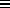

Common Lisp the Language, 2nd Edition
The following predicates test for individual data types.
[Function]
null object
null is true if its argument is (), and otherwise is false. This is the same operation performed by the function not; however, not is normally used to invert a Boolean value, whereas null is normally used to test for an empty list. The programmer can therefore express intent by the choice of function name.
(null x) == (typep x 'null) == (eq x '())
[Function]
symbolp object
symbolp is true if its argument is a symbol, and otherwise is false.
(symbolp x) == (typep x 'symbol)
[Function]
atom object
The predicate atom is true if its argument is not a cons, and otherwise is false. Note that (atom '()) is true, because ()nil.
(atom x) == (typep x 'atom) == (not (typep x 'cons))
[Function]
consp object
The predicate consp is true if its argument is a cons, and otherwise is false. Note that the empty list is not a cons, so (consp '()) == (consp 'nil) => nil.
(consp x) == (typep x 'cons) == (not (typep x 'atom))
[Function]
listp object
listp is true if its argument is a cons or the empty list (), and otherwise is false. It does not check for whether the list is a ``true list'' (one terminated by nil) or a ``dotted list'' (one terminated by a non-null atom).
(listp x) == (typep x 'list) == (typep x '(or cons null))
[Function]
numberp object
numberp is true if its argument is any kind of number, and otherwise is false.
(numberp x) == (typep x 'number)
[Function]
integerp object
integerp is true if its argument is an integer, and otherwise is false.
(integerp x) == (typep x 'integer)
[Function]
rationalp object
rationalp is true if its argument is a rational number (a ratio or an integer), and otherwise is false.
(rationalp x) == (typep x 'rational)
[Function]
floatp object
floatp is true if its argument is a floating-point number, and otherwise is false.
(floatp x) == (typep x 'float)

[Function]
realp object
X3J13 voted in March 1989 (REAL-NUMBER-TYPE) to add the function realp. realp is true if its argument is a real number, and otherwise is false.
(realp x) == (typep x 'real)

[Function]
complexp object
complexp is true if its argument is a complex number, and otherwise is false.
(complexp x) == (typep x 'complex)
[Function]
characterp object
characterp is true if its argument is a character, and otherwise is false.
(characterp x) == (typep x 'character)
[Function]
stringp object
stringp is true if its argument is a string, and otherwise is false.
(stringp x) == (typep x 'string)
[Function]
bit-vector-p object
bit-vector-p is true if its argument is a bit-vector, and otherwise is false.
(bit-vector-p x) == (typep x 'bit-vector)
[Function]
vectorp object
vectorp is true if its argument is a vector, and otherwise is false.
(vectorp x) == (typep x 'vector)
[Function]
simple-vector-p object
vectorp is true if its argument is a simple general vector, and otherwise is false.
(simple-vector-p x) == (typep x 'simple-vector)
[Function]
simple-string-p object
simple-string-p is true if its argument is a simple string, and otherwise is false.
(simple-string-p x) == (typep x 'simple-string)
[Function]
simple-bit-vector-p object
simple-bit-vector-p is true if its argument is a simple bit-vector, and otherwise is false.
(simple-bit-vector-p x) == (typep x 'simple-bit-vector)
[Function]
arrayp object
arrayp is true if its argument is an array, and otherwise is false.
(arrayp x) == (typep x 'array)
[Function]
packagep object
packagep is true if its argument is a package, and otherwise is false.
(packagep x) == (typep x 'package)
[Function]
functionp object

functionp is true if its argument is suitable for applying
to arguments, using for example the funcall or apply function.
Otherwise functionp is false.
functionp is always true of symbols, lists whose car
is the symbol lambda, any value returned by the function
special form, and any values returned by the function compile
when the first argument is nil.

X3J13 voted in June 1988 (FUNCTION-TYPE)
to define
(functionp x) == (typep x 'function)
Because the vote also specifies that types cons and symbol are disjoint
from the type function, this is an incompatible change;
now functionp is in fact always false of symbols and lists.
[Function]
compiled-function-p object
compiled-function-p is true if its argument is any compiled code object, and otherwise is false.
(compiled-function-p x) == (typep x 'compiled-function)
[Function]
commonp object
commonp is true if its argument is any standard Common Lisp data type, and otherwise is false.
(commonp x) == (typep x 'common)
X3J13 voted in March 1989
(COMMON-TYPE)
to remove the predicate commonp (and the type common) from the language.
See also standard-char-p, string-char-p, streamp, random-state-p, readtablep, hash-table-p, and pathnamep.